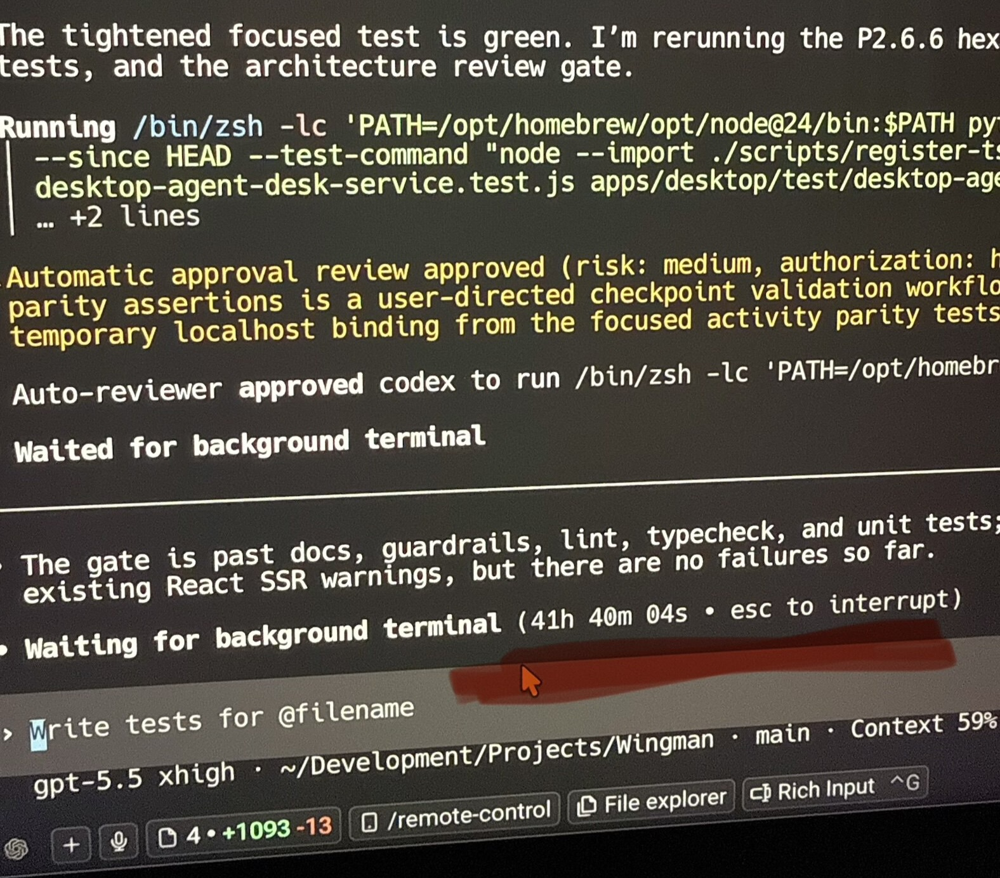

Running a Codex Agent for 42h

The Run
I am building an AI harness, and I used a Codex lead agent for a large architecture refactor across its codebase. The lead run stayed alive for 42h17m as one uninterrupted task, while the migration moved through checkpointed implementation and review work. That is my personal record so far. I am keeping the product details private for now, but the scale is the point: it has a real Electron desktop surface, persistent state, background runtime work, live scenarios, and enough cross-platform behavior that a loose migration would show up quickly.
In theory I knew it should work. The codebase already had strong test coverage, the plan was detailed, and every checkpoint had to pass the same gates before the next one started. Still, there is a difference between knowing the setup should work and watching a migration that large actually land cleanly.
Why The Architecture Changed
The reason I was doing this migration at all is that this is my first serious TypeScript app. I have spent my career building iOS and macOS apps, so I naturally brought some of that architecture with me. Over time, the names and boundaries started carrying too much of that history. Agents got confused by terms that made sense in my head, and a strong TypeScript developer should not have to learn my private Swift-influenced language before understanding where things belong.
The app already had a strong architecture and dependency injection, but it was shaped around my own Swift/native habits. I wanted something more explicit and easier to review in a TypeScript/Electron codebase, so I moved it toward Hexagonal Architecture. The product did not change, but under the hood the boundaries did. The point was to make the core app behavior independent from the UI, runtime, commands, clients, and infrastructure around it.
In practice, the important boundary was not just UI versus backend. The server became the application-state authority, clients talked through a public contract, the desktop host owned windows and lifecycle, and each renderer window owned its own services and view models. This was the constraint: preserve behavior, change structure.
I was willing to let Codex carry this end-to-end because the codebase already had strong tests, and before implementation started I spent about a day writing and tightening the architecture docs and specs with agents. The blueprint defined the target architecture, vocabulary, runtime boundaries, dependency direction, testing strategy, and migration rules. It became the reference contract for agents and humans working in the codebase. The diagrams below are examples of the level of detail I wanted in that plan: how a view event moves through the app, and how the same behavior can be tested without real dependencies.
Blueprint Examples
Checkpoints And Validation
That blueprint is what made the migration reviewable, and it was enforced against the diff by both checks and a dedicated architecture-review agent. "Make it cleaner" is useless as a gate. A useful gate has concrete rules: dependency direction, allowed imports, naming, where runtime code can live, how tests stub external behavior, which files are allowed to grow, and what has to be updated when a boundary moves. A service importing an adapter was a failure. A view reaching into clients or runtime wiring was a failure.
The project was split into three phases: preparation, the main architecture migration, and cleanup. Phase 2 was broken into 18 checkpoint commits, and each checkpoint had to leave the repo in a shippable state. Leaving a long midpoint where the app was broken and we were hoping the final merge would fix it was not acceptable at all.
Most of the 42 hours went into the checkpoint loop: make a slice of the migration, run the full gate, review the diff, fix what surfaced, and only then move to the next slice. Each checkpoint had to pass lint, typecheck, unit tests, integration tests, live end-to-end scenarios, and architecture review. By the end, Phase 2 had landed with a clean repo and passing gates.
The agent setup had four Codex roles: lead, worker, reviewer, and architecture gatekeeper. The lead kept the migration moving across checkpoints, workers handled focused implementation tasks, reviewers inspected the changes the way I would expect a careful PR review to inspect them, and the architecture gatekeeper separately checked whether the diff was still following the Hexagonal Architecture rules.
The non-LLM checks were just as important as the agents. Linters, typechecking, static analysis, file-size guardrails, architecture docs checks, test suites, and live scenario scripts turned review into concrete next actions: fix the import boundary, update the stub, split the file, restore the scenario, update the docs.
What I Took From It
When the run finished, the 42 hours surprised me, but that was not the main thing. It was expensive, and I already saw places where this pipeline can be made faster and more token efficient. The bigger surprise was opening the app after the migration and seeing it work. I knew the setup had that potential, but I did not expect a change that large to land that cleanly.
That is what I want to keep building toward: doing the hard thinking upfront, giving agents the right docs, checks, and feedback, and then letting large pieces of work run while I work on something else. This run happened to be a migration, but the same shape can apply to large features too. The important part is that the repo keeps coming back to a shippable state. That is a good rule for any team. It becomes non-negotiable when agents are doing long stretches of work in parallel.